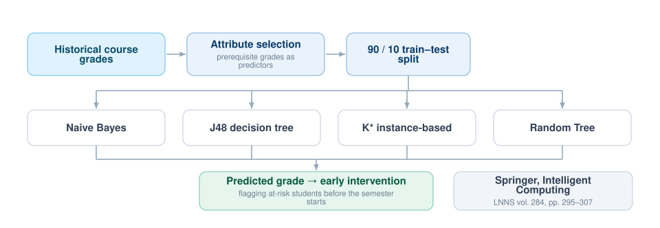

Forecasting Student Performance Before the Semester Goes Wrong
If you can predict which students are heading for trouble in an upcoming course, you can reach them while intervention is still cheap. This work mines historical grade distributions to forecast academic outcomes, comparing four classifiers so the prediction rests on more than one model’s idiosyncrasies.

The premise
Academic performance is not random. How a student did in the prerequisites carries real signal about how they will do in the courses that build on them. Educational data mining turns that intuition into a forecast that an advisor can act on — identifying students who need support early enough that support still helps.
Comparative algorithmic analysis
To make the prediction reliable rather than merely plausible, the dataset was put through four distinct classifiers under identical conditions:
- Naive Bayes — probabilistic, strong baseline on categorical grade data.
- J48 — a decision tree, chosen partly because its rules can be read and explained to a non-technical advisor.
- K* — instance-based, making no assumption about the shape of the underlying distribution.
- Random Tree — a randomised tree learner for variance comparison.
Method
The model was trained on 90% of the dataset using grade-based predictor attributes. By mapping the correlation between prerequisite performance and success in advanced courses, the system achieved significant accuracy in forecasting final GPA trajectories.
Publication
This work was published in the Springer series Lecture Notes in Networks and Systems, volume 284 (Intelligent Computing), pages 295–307.